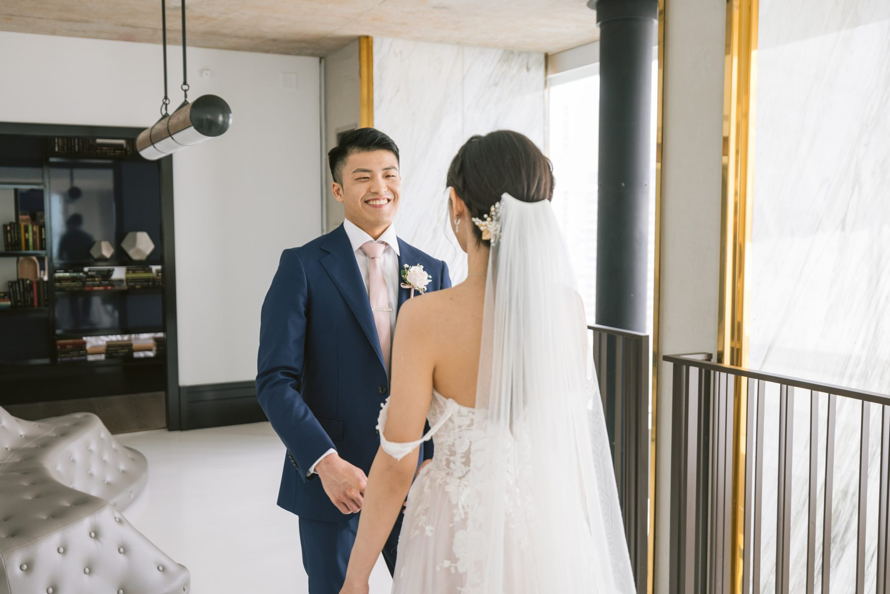
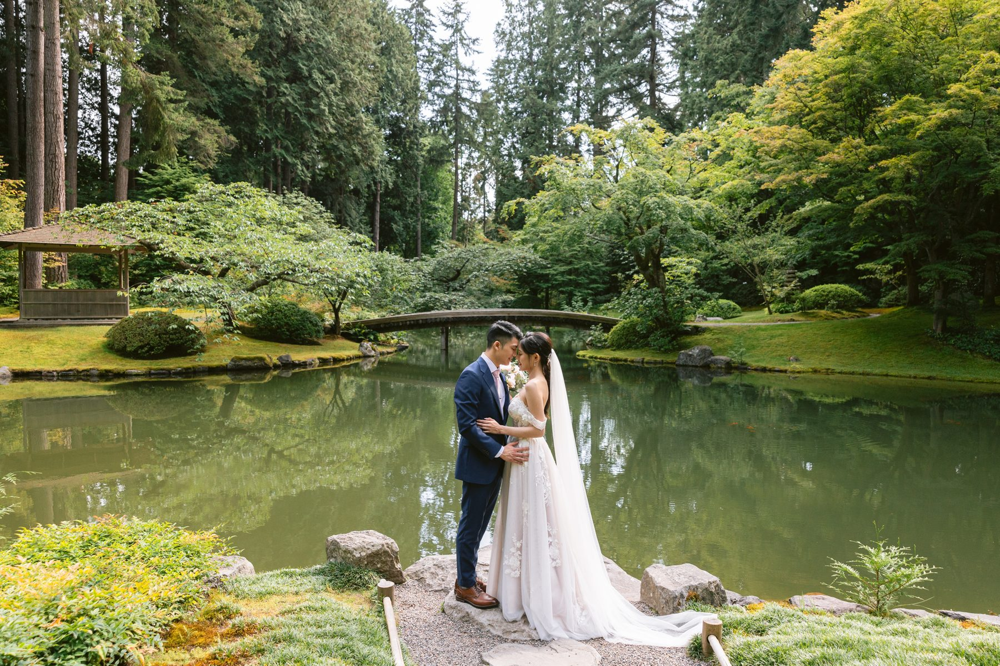
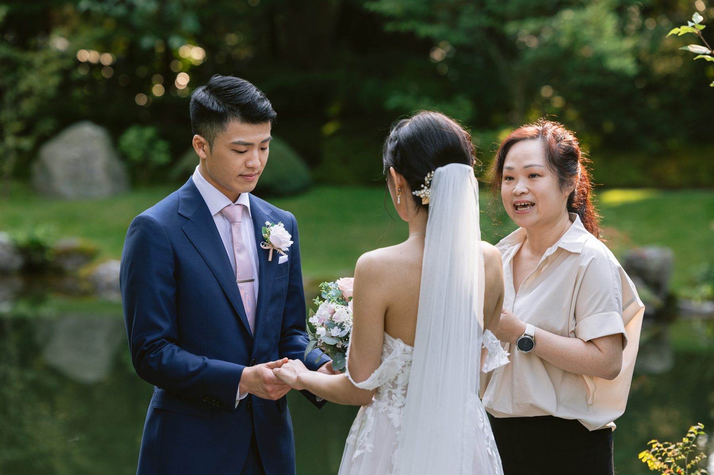
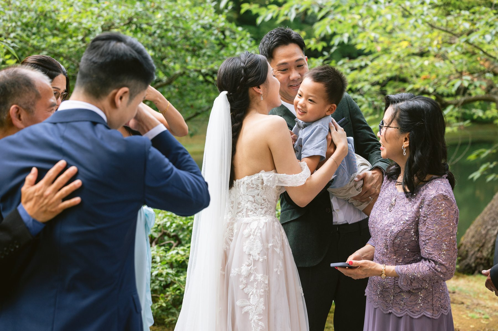
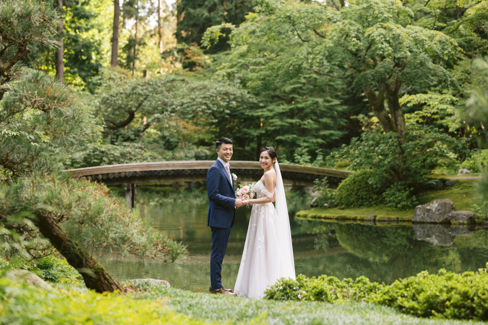

Sara and Vincent got married in a Japanese garden with a pond, a wooden bridge and about as much green as a camera can handle.
It was one of the quietest, most beautiful ceremonies I have shot. And almost nothing about it was complicated.
The morning began in a high floor suite with dark bookshelves and a lot of white light. Sara wore a red lace gown for the tea ceremony. Vincent wore navy with a red bow tie. Their parents sat on a grey sofa and the couple knelt on a rug in front of them, one set of parents at a time.
Watch the faces in a tea ceremony, not the cups. A mother touching her daughter's hair. A father fighting a smile. The red envelope changing hands. These are the frames families ask for years later.
After the tea ceremony Sara changed into a pale off the shoulder gown with a long veil. Vincent waited by a staircase railing. She walked up behind him, he turned, and that was that.

If you are doing two outfits, tea ceremony first, white gown second, and a first look in between, you have found the smoothest order of the day. Nothing is rushed because everything is private.
For the drive to the garden they had a white convertible. Top down, veil in the wind, a kiss in the front seat.
I will say it every time. The transport between locations is part of the story. You get ten minutes of unscripted couple time and a set of photos nobody else has.
The ceremony was in Nitobe Memorial Garden at UBC, a traditional Japanese garden with a pond, stone lanterns, a tea house and a small gate at the entrance. Sunlight comes through maples and cedars. Everything is soft and green. You do not need flowers because the garden is the flowers.

A few things worth knowing if you are considering it.
It is a small space, so your guest list has to be small. A close circle of family is exactly right. Weddings here are booked and permitted through UBC, so ask about availability and rules before you fall in love with it. And go in the late afternoon if you can. The light turns gold and the paths stay uncrowded.

Vincent read his vows from a small black book. Sara dabbed her eyes and laughed. Their parents stood just behind them, close enough to hear every word. Their officiant stood in the middle, relaxed, in a simple blouse. There was no sound system and no aisle.
There did not need to be. When your guest list is this small, the ceremony turns into a conversation.

This is the real reason I recommend a garden for a small wedding. Once the ceremony ends, you are already standing in your portrait location. No transit, no schedule squeeze. We walked a loop. The wooden bridge. The pond. The tea house. The little gate at the end.

Vincent and Sara moved slowly and held on to each other. Nobody needed to tell them what to do. I gave them the next place to walk and they filled it.
If your guest list is under thirty, look at gardens before ballrooms. Book a first look so you get the quiet time. Plan the tea ceremony at the start of the day, not squeezed between the ceremony and dinner. And ask your photographer whether they have actually shot at the location, not just seen it on Instagram.
Sara and Vincent had an easy, warm, unhurried day. It looked like one too.
SimplyWed Studio is a Vancouver wedding and elopement photography studio. Send us your date through the contact page and we will talk through locations, permits and light. If you are leaning toward something even smaller, read about planning a 30 person wedding in Vancouver.
← Back to the journal